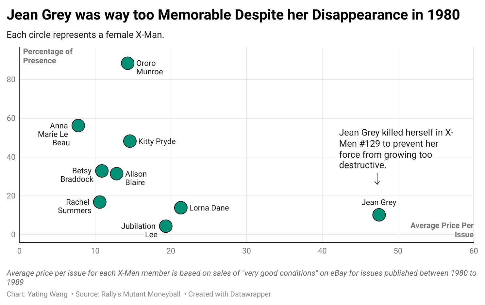
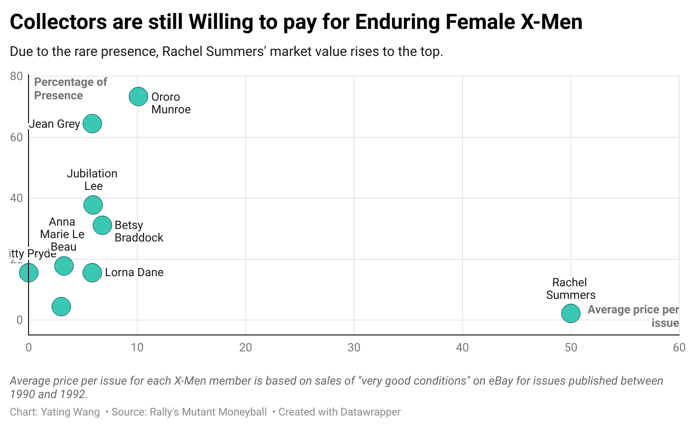

From a team of five to a troop of mutants, the X-Men evolved from comic book papers to a Marvel cinematic powerhouse. The core members, especially female X-Men, have only become more pivotal and marketable.
In 1963, a group of superheroes, humans whose mutated X-gene granted them natural superhuman abilities, became alive in American Comics.
Soon, however, a team of five could no longer satisfy the fanbase, resulting in a stagnation of sales and a reprinting of older issues.
After a downfall in sales in early 70s, under the direction of the writer Chris Claremont, X-Men kicked off with a new story, Giant-Size X-Men (Uncanny X-Men #129-138) in 1980 which quickly became readers’ favorites.
Well-known X-Men were developed during this time, such as Storm (Ororo Munroe) and Polaris (Lorna Dane).
By the end of the 1980s, X-Men had expanded from a team of five to 24, growing more diverse in gender and race.
The demand for an extensive, individual storyline for each core member arised meanwhile. Among all issues of Giant-Size X-Men, the Dark Phoenix Saga released in 1980, a new storyline focusing on Jean Grey’s sacrifice after she struggled to control the corruptive side of her telepathic ability, gained Jean Grey abundant attention and fandom.
The story arc of Jean Grey was both surprising and intriguing enough to elevate Jean Grey and the title to a new level in American Comics. The Dark Phoenix Saga was ranked the second best Marvel Comics of all time by both GamesRadar+, a website for updates on games and comics, and Goodreads, a community site for book reviews. Jean Grey was also the 5th in “Best X-Men members of all time” on GamesRadar+. She was the first female X-Man introduced to the readers as well as the ever-first mutant student who made her debut with Professor X.
Chart made by Yating Wang
The death of Jean Grey has only driven the interest in and empathy for her to grow as time has gone - fans, creators, writers and artists were all striving to find a way to bring her back. As the chart shows, Jean Grey rose from the ashes - her appearance was over 60 percent of issues she was featured in in the 90s. Six more female X-Men made their debut in the 80s, but they were quickly marginalized in issues published after 1990. Ororo Munroe, who almost dominated the narrative a decade ago, had been given less significance, too.

This is an image caption
On eBay, among resales of X-Men issues released in the 80s, the resale price for Jean Grey surpasses that of other female X-Men, exceeding twice of the price of the second most popular superhero, Polaris. All female X-Men saw a devaluation after 1990, yet Jean Grey’s value only dropped by 12 percent - the minimal decrease among them.
Rachel Summers, Jean Grey’s daughter and who only appeared in one issue, receives more recognition with a market value of $50 per issue on eBay.

The death of Jean Grey did not fade her out of readership, and instead summoned more desires to preserve her as the flagship of X-Men. Jean Grey to exist in memory. Had the controversial editorial decision of Jean Grey’s rebirth gone another way, her market value may have followed the fate of other females.